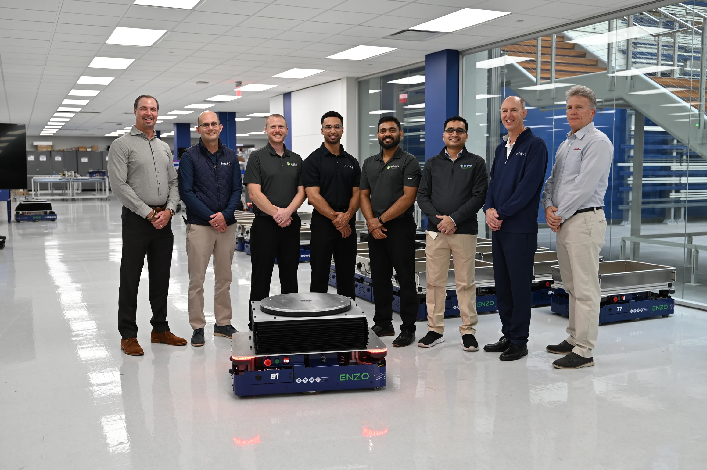
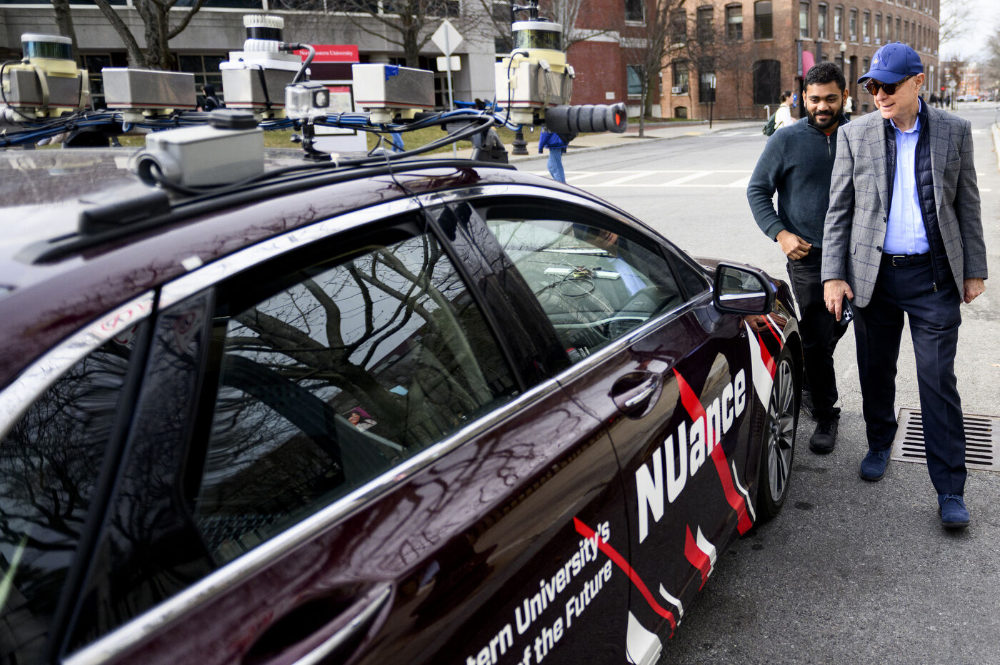

Featured
In the press
Work featured by Beckhoff Automation, Beckhoff YouTube, and Northeastern University.
Prototype to Production in 60 Days: CTDI's Enzo Redefines AMR Innovation
CTDI developed the Enzo AMR in-house using Beckhoff's TwinCAT platform, going from a working prototype in two weeks to a fully autonomous production robot in 60 days. The platform runs a hybrid control architecture with TwinCAT/BSD and Linux via virtualization, enabling seamless communication between ROS2 and TwinCAT for real-time SLAM navigation and QR code guidance.
The Enzo features modular "toppers" for shelves, lifters, tuggers, and conveyors, forming a single adaptable platform for goods-to-person operations across CTDI's 100 global facilities. I'm named in the article as part of the core team that brought this system to life.
Read the full article
CTDI's Enzo AMR: Powered by Beckhoff
Beckhoff released a video feature on the Enzo AMR program showcasing the robot in action across warehouse operations. The video covers the full system architecture, from the Beckhoff C6032 IPC running TwinCAT to the ROS2 integration for SLAM-based navigation, modular topper system, and fleet deployment.
I'm featured in this video as part of the core engineering team that designed, built, and deployed the Enzo platform from prototype to production.
Watch on YouTube
Self-Driving Car Demo for Northeastern University President
Featured in Northeastern University's official LinkedIn post during National Robotics Week. Demonstrated a simulated self-driving car to President Aoun, showcasing how the vehicle collects and processes real-time data from Boston's streets for autonomous navigation.
The project involved building a full perception and data collection pipeline for autonomous driving, integrating sensor data from cameras and LiDAR to map urban environments. This work was part of the robotics program at Northeastern, where I developed hands-on experience with autonomous vehicle systems, computer vision, and real-time sensor processing.
View the post